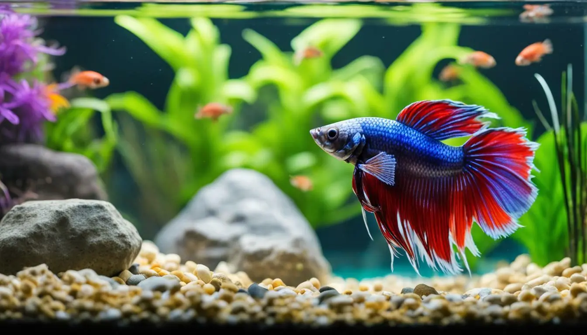

|  | ||
|---|---|---|
| Funny Cat | Curious Dog | Bored Fish |
| In 2015, an exhibition called "How Cats Took Over The Internet" opened at the Museum of the Moving Image in New York.The exhibition "looks at the history of how they rose to internet fame, and why people like them so much". | A study by Harvard D.O.G.S. concluded that dogs are curious in nature. Dogs love to learn new things and may even enjoy reading the VI Daily News | After years of swimming at Trunk Bay this colorful tiny fish got really bored of it and decided to swim to Magens Bay . It took her a whopping 5 months and 29 days to reach. |
Great pet photography is about volume. You’ll need to take lots of pictures, and there will be plenty of duds, but among all those pics will be some gems. Here are more professional pet photography tips: